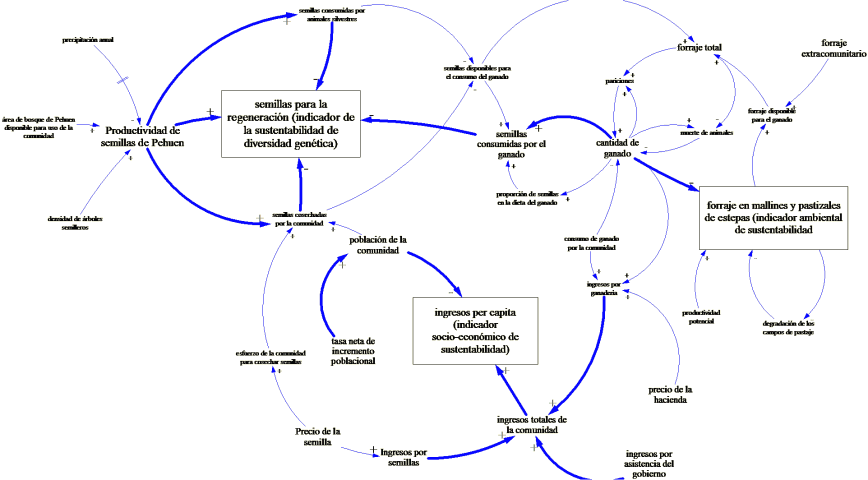

EL
MODELO PEHUEN
En los últimos
30 años más o menos, el campo de la genética de la
conservación forestal se ha centrado principalmente en la
identificación de los centros de diversidad genética de
las especies arbóreas. Pero en términos de aplicabilidad
al mundo real, este trabajo se ha soslayado un componente
importante de la conservación y uso de recursos genéticos
forestales al no tener en cuenta a los actores más importantes
en la conservación: los seres humanos.
Perturbaciones
naturales como incendios, vulcanismo y tormentas de viento, y las
acciones del hombre han dado forma a las características de
los bosques de Araucaria araucana en el tiempo. Como se ha visto en
el capítulo 6, la deforestación ha reducido
significativamente la extensión de la Argentina bosques de
araucarias ( Veblen et al, 1999 ; . Rechene 2000 ). Estas
perturbaciones importantes tienen afectado a la estabilidad de los
ecosistemas de araucaria y la supervivencia de su especie. ellos
han modificado los hábitats forestales y su composición
florística y genéticas características , pero con
una intensidad que varía en todo el área de
distribución natural de la especie. Bosques de araucaria
siguen cambiando bajo la influencia del uso humana. La tala
selectiva y la recolección de semillas ( piñones )
están ahora afectando fuertemente los ecosistemas de araucaria
y procesos genéticos , y esto es especialmente cierto en las
poblaciones orientales fragmentadas de las especies que ahora se
regeneran principalmente por medios vegetativos. Por lo tanto ,
cuando se estudia la genética de pehuén y la
dinámica de sus bosques , la adición del elemento humano
y sus diversos contextos socioeconómicos , es
esencial.
La complejidad de
estos sistemas modificados por el hombre no es fácil
desentrañar a través del pensamiento lineal o a
través de herramientas analíticas estrictamente
deterministas. Las interdependencias dinámicas entre los
muchos parámetros y variables que se deben considerar en un
sistema hacen necesario utilizar un enfoque integral ( Haraldsson
2000 ). El pensamiento sistémico y la dinámica de
sistemas , mejora nuestra capacidad de comprender interrelaciones
dinámicas ( Richmond 1993 ) , y estos son por lo tanto
herramientas apropiadas para conceptualizar y analizar entidades
como los bosques que esperamos conservar al mismo tiempo que
realizamos la explotación de sus recursos ( = '
conservación mediante el uso de "sistemas ).
A través de un
modelo dinámico de simulación, tratamos de describir la
bosques de Araucaria de Argentina, habitados por Comunidades
Aborígenes Mapuche. Los elementos más importantes
integrados en nuestro modelo son:
• La
extensión de los ecosistemas forestales a modelar y cambios
que se derivan de
las acciones
humanas ( = límites del sistema ).
•
Productividad de semillas en diferentes bosques.
• El consumo
de semillas por los animales domésticos y
salvajes.
•
Recolección de semillas por la comunidad.
• La
diversidad genética forestal.
•
Condición de las praderas (productividad y capacidad de carga
).
• La cantidad
y la distribución de la riqueza dentro de las comunidades,
y
• ingreso per
cápita a partir de fuentes no agrícolas.
A lo largo de este
capítulo que llamamos el Modelo Pehuén, hemos establecido
dos objetivos:
• Representar
la estructura y la dinámica de los bosques de Pehuen a
través de un estudio descriptivo ,
un modelo
conceptual que identifica los vínculos y reacciones entre
genética , ecología y procesos y variables
socioeconómicas
• Predecir el
comportamiento futuro del sistema mediante la factorización en
el modelo de prácticas actuales de gestión y algunas
alternativas más sostenibles, lo que nos permite evaluar los
resultados de los diferentes regímenes de gestión a
través del tiempo .

REFERENCIAS
Gallo. L.
Letourneau F.J., Vinceti B. 2004.